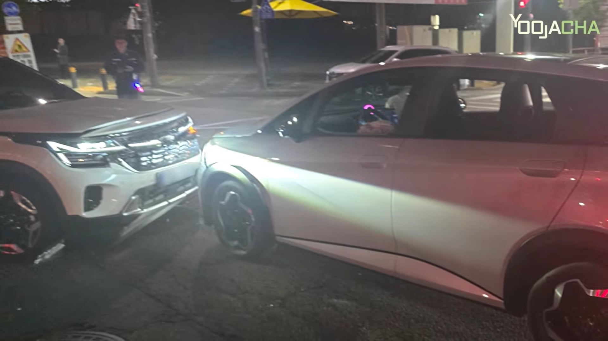
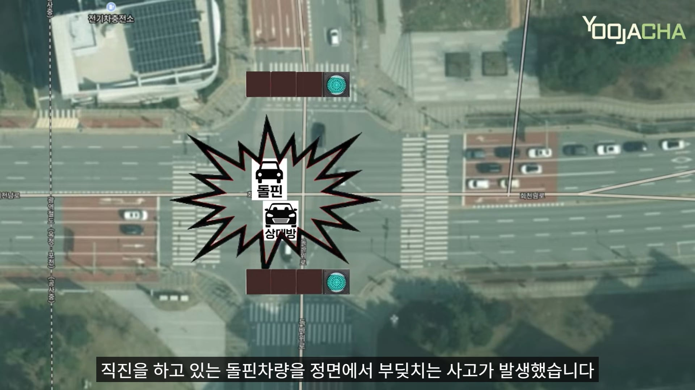
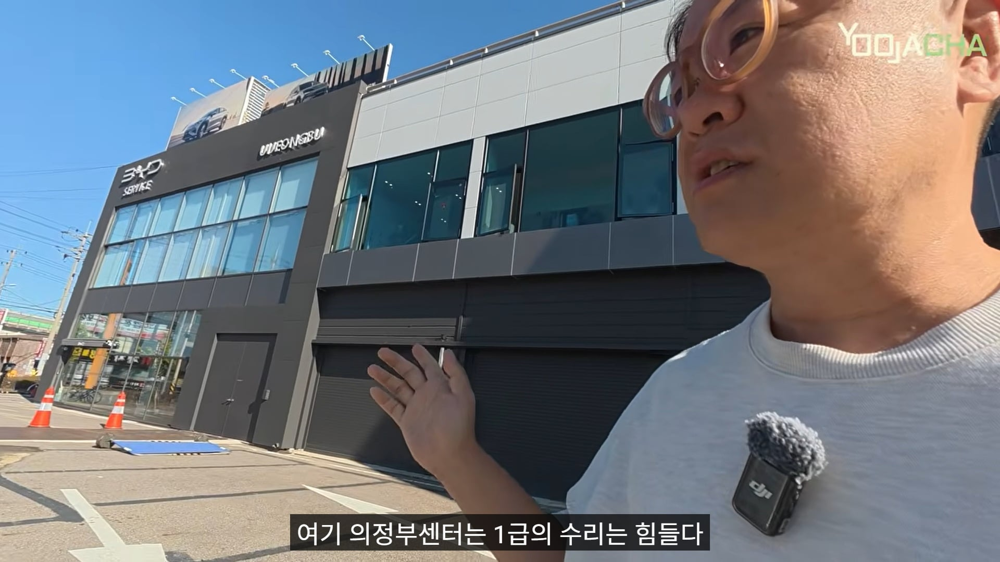
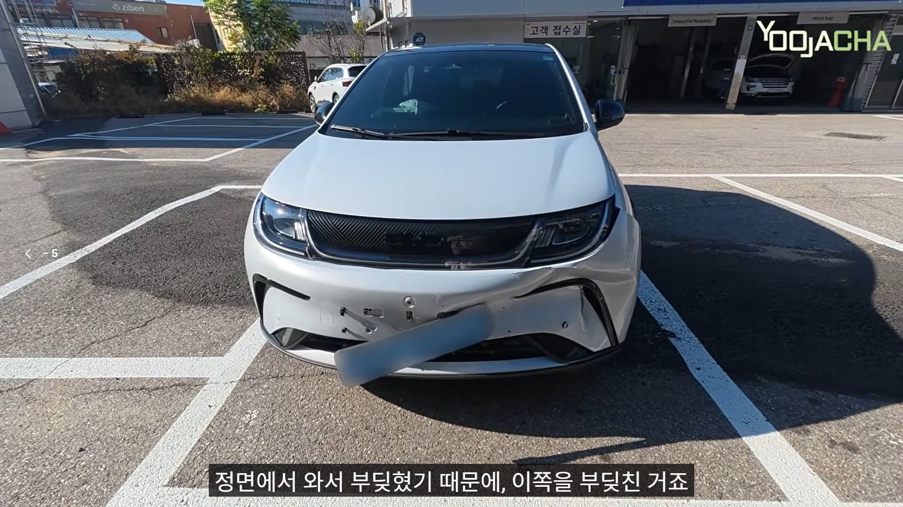
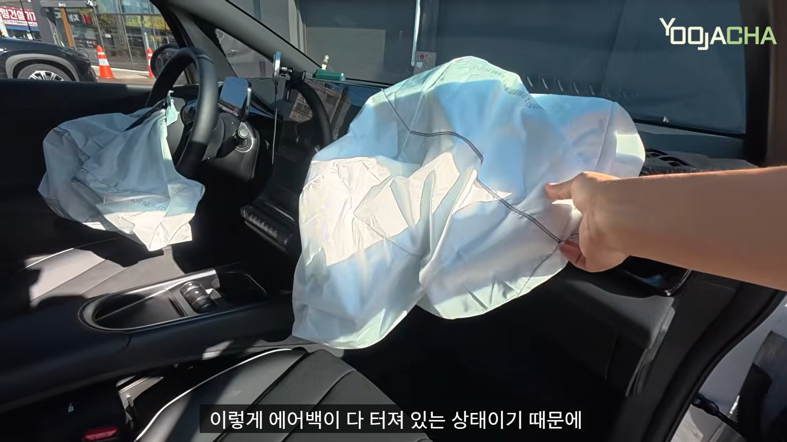
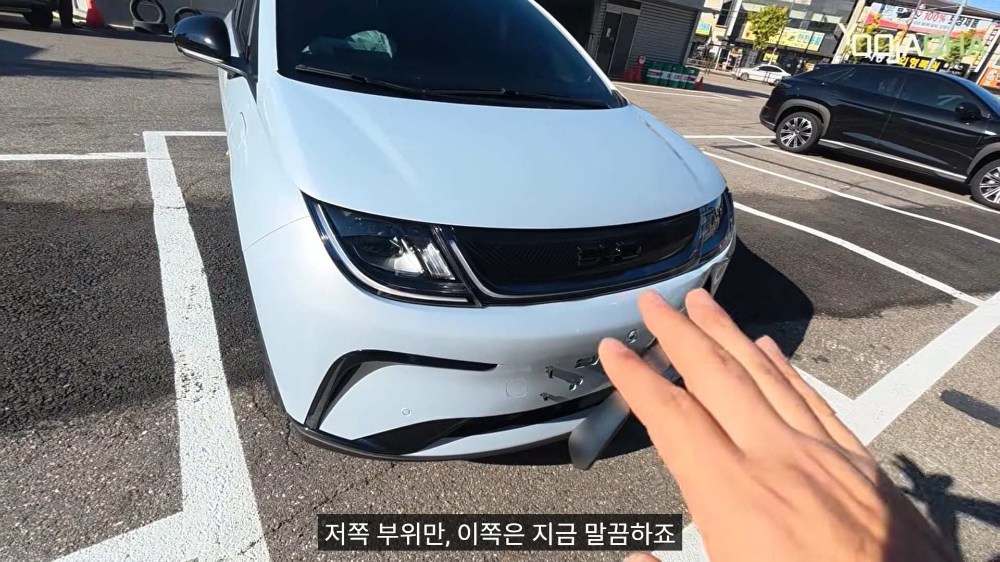

결국 다른 차로 바꾸기로 했다고






결국 다른 차로 바꾸기로 했다고
에어백 전개 기준에 속도가 있음?
시속 30정도임 근데 생각보다 에어백이 잘 안터지는 이유는 많은 경우 사고직전 운전자가 본능적으로 브레이크를 밟기 때문임
저건 상대 셀토스의 반응속도가 늦은걸로 보임
에어백 터지고 펜더 밀렸고 전기차라서 배터리 파손까지 의심되는 상황이면 어떤 브랜드 차든 다 전손인 건데 이걸 두고 중국차 역시 병신이네~ 하는 건 그냥 알못이면서 억까하는 것 밖에 안 됨. 깔 걸로 까라ㅋㅋ 저 사례에서만큼은 byd 문제점 드러난 거 하나도 없다
어허.. 현기차가 BYD까기 위해서 들고 온건데 팩트로 패다니.
나도 혐중감정 상당한 사람이고 근본 없는 중국차들 싫어하는데 짜치게 이런 거 갖고 와서 억까하는 건 진짜 병신 같음ㅋㅋ 잘 찾아 보면 정까로 깔만한 거 존나 많은데 그런 거 찾아 오긴 귀찮고 까고는 싶고 뭐 그런 건가
현기의 대응이 존나 웃기긴 함.
닛산, 혼다 같은 그냥 냅둬도 알아서 망하는 회사는 아무런 대응도 안하더니,
BYD가 치고 올라오니 하루에도 BYD까는 글이 몇개씩 올라오는지 모르겠음.
차 사사는돈 보태줄거아니고 심지어 존나 짜치게 '느그 아빠차 BYD' 같은 수준떨어지는 짓이나 하고 있고
계기판 없는 아반떼같은거 만들지 말고 지들 차나 잘 만들것이지.
이런거 보면 차 보다 바이럴, 댓글을 더 잘 만드는 회사답다고 새삼 느낌.
나 오늘 신형아반떼 깡통 처음 봄ㅋㅋㅋㅋ
디자인 ㅈ구려서 Cn7이 훨남ㅋㅋㅋㅋㅋ
이번 깡통은 역대급으로 못생겼음
이 영상이 현기차에서 만든거임?
병신이기 때문에 병신이라 놀리는거에 발작하는 니아비들 이렇게 많다는게 신기함 ㅋㅋ
저분 미디어오토에서 장진택 기자랑 같이 영상 찍던 유감독님 아님?
맞음 독립하심
기름차로 치면 엔진에 충격가서 전손처리하는거 아닌가
BYD만의 문제는 아닌거같은데
근데 전손처리해도 수리해서 또 판대매
그럼 사고이력 차량을 어케피함? ㄷㄷㄷ 보험이력같은갓도 보이나
해외에 던지는거 아님?
보통 수선 수출이지
진짜 서비스 조때네 ㅋㅋ
나도 머리론 이해하는것 같으면서도 윗댓 영상 볼때마다 여전히 신기함ㅋㅋㅋ